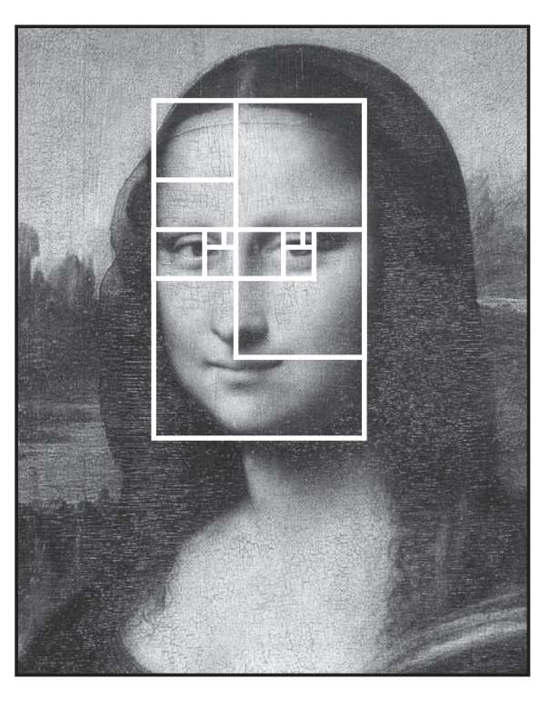
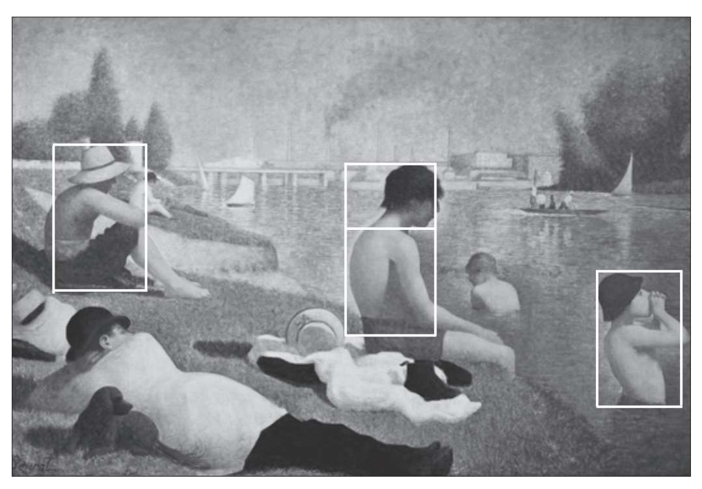
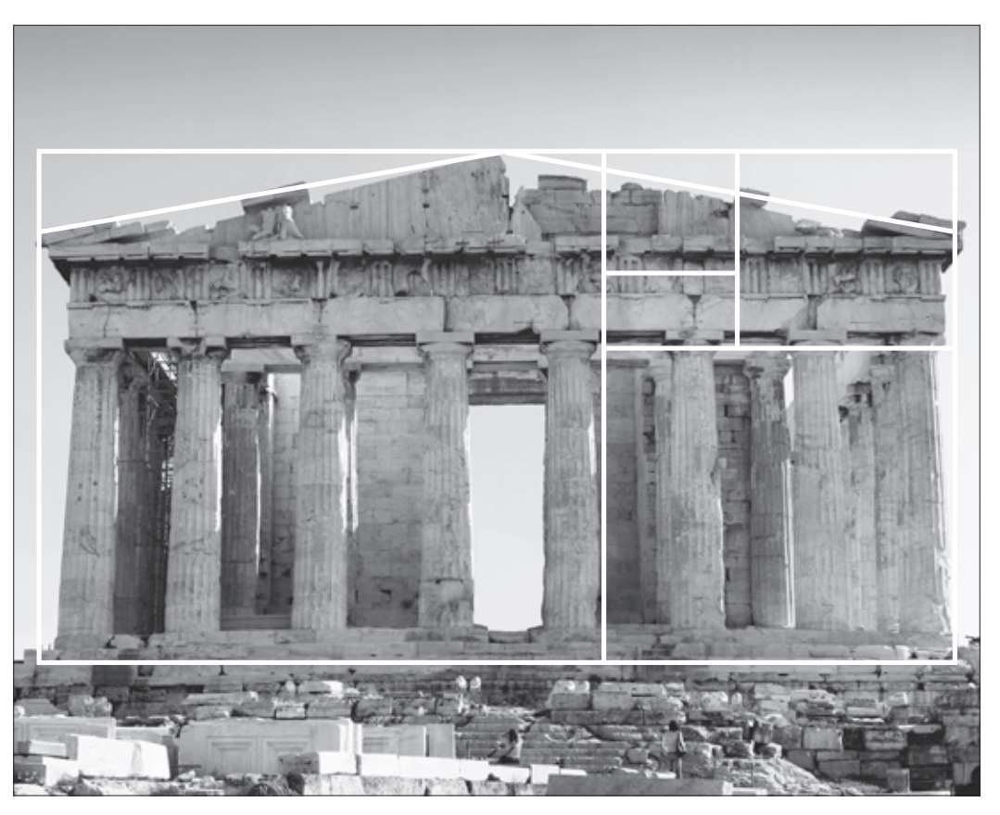
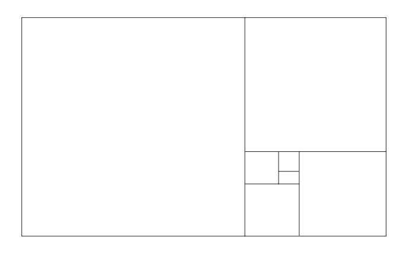
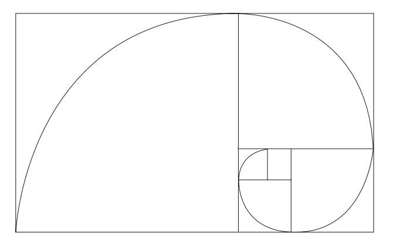
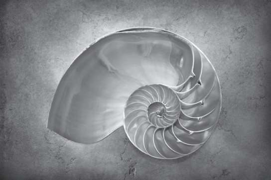
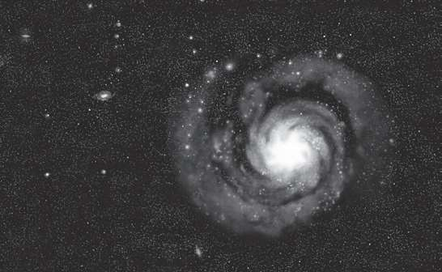
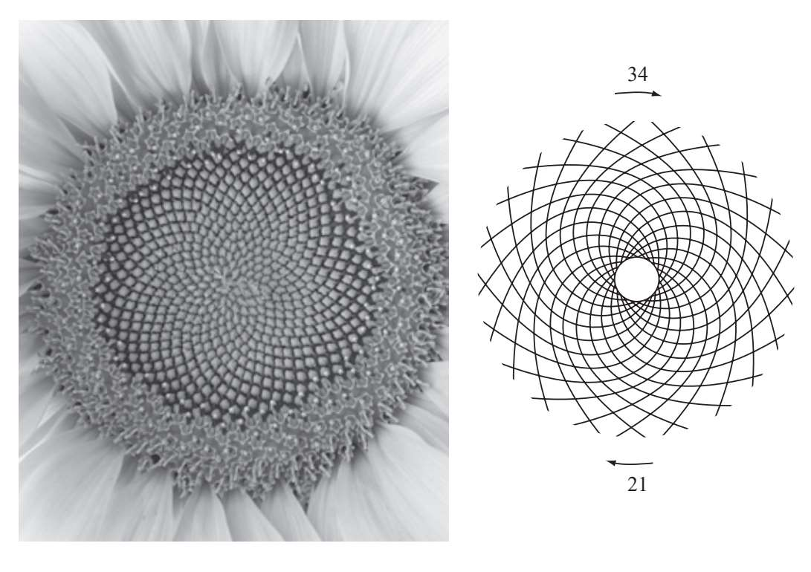

在艺术史上，人们已经写了太多隐藏在《蒙娜丽莎的微笑》背后的秘密，但是我们同样可以用数学的方法来解开这个谜题。请看下图，如果在蒙娜丽莎美丽的脸庞上叠加数个黄金矩形会发生什么：
列奥纳多·达·芬奇在创作这幅伟大的作品时是否已经想到了运用黄金比例？这似乎不太可能。然而还有一种争议较少的说法，那就是这位佛罗伦萨的天才非常重视美学和数学之间的关系。我们暂且把这个问题放到一边来说说另一件事。卢卡·帕乔利曾写过一本数学方面的书并将其命名为“神圣比例”（De Divina Proportione）。作为卢卡的好友，达·芬奇为该书创作了插图。

当然，无论黄金比例存在于矩形的邻边还是更加复杂的几何图形中，它们并不是只在达·芬奇的作品中出现。后来的许多画家都在自己的作品中运用了这一基本原理，包括后印象派画家乔治·修拉和拉斐尔前派画家爱德华·伯恩—琼斯。萨尔瓦多·达利创作的《最后的晚餐》堪称杰作，黄金比例在这幅画中发挥了突出的作用。这幅画的尺寸为268厘米×167厘米（一个近乎完美的黄金矩形），整个画面的构图采用了经典的正十二面体。这种几何体为正多面体，刚好能够放入合适的球内，与黄金比例关系密切。我们会在本书的第三章看到有关正十二面体的更多内容。

《阿涅尔的浴者》（1884），乔治·修拉绘。整幅画布为黄金矩形。从白线围出的区域可以看出，画中的某些部分也呈黄金矩形。
现在让我们把目光投向建筑领域。建筑或许是实用艺术的巅峰。如果黄金比例真的能够通过各种形式营造出和谐之美，那我们就应该能在世界上最具标志性的几何建筑中发现它。虽然过于强烈地坚持这个看法有点冒险，但是黄金比例确实出现在了许多伟大的历史建筑中，比如吉萨大金字塔或是某些著名的哥特式教堂。尽管大多数时候，黄金比例是以极其微妙的方式展现在世人面前，但我们还是能够在许多建筑中发现它。就拿举世闻名的帕提侬神庙来说，它是菲狄亚斯的代表作，这座建筑的正面就可以整齐地分解为大小不一的黄金矩形：

玫瑰的秘密
并不是只有人类才觉察到了黄金比例与美之间的联系，似乎大自然在挑选自己心仪的形状时就已经赋予了黄金比例特殊的作用。为了弄清这一点，我们需要更加深入地研究黄金比例的性质。首先让我们把一个正方形嵌入常见的黄金矩形中（正方形的边长等于最初黄金矩形的宽），这样就创造了一个新的黄金矩形。如果把这个过程重复数次，就会得到下面这张图：

现在我们要在每个正方形内画一条圆弧，让每个圆弧的半径等于它所在正方形的边长。结果如下图所示：

这条优美的曲线十分近似于我们所说的对数螺线。对数螺线不仅仅是一个奇特的数学现象，它还存在于从鹦鹉螺壳上炫目的花纹……

到星系的悬臂……

再到地球上的玫瑰花瓣中。观赏盛放的玫瑰时，那些螺线状的花瓣毫无疑问会给人一种优雅的感觉：
在这位花中皇后的引领下，我们将要进入另一个由黄金比例主宰的世界——植物世界。植物中存在的黄金比例不易让人察觉，为了能清楚地描述它，我们需要引入一个全新的数学概念：斐波那契数列。13世纪的意大利数学家斐波那契曾对这个数列做出描述。该数列的前两项为1，后面的每一项都等于前两项之和。斐波那契数列有无数个项，前十五项为：
1，1，2，3，5，8，13，21，34，55，89，144，233，377，610
随着斐波那契数列项的不断增多，后一项与前一项之比越来越逼近黄金比例，下面让我们来验证一下：
1/1=1
2/1=2
3/2=1.5
5/3=1.666666……
8/5=1.6
13/8=1.625
21/13=1.615384……
34/21=1.619047……
55/34=1.617647……
89/55=1.618181……
144/89=1.617977……
Φ=1.6180339887……
当这一过程重复到第40次，相邻项之比越来越接近黄金比例，已经精确到了小数点后的14位。黄金比例与斐波那契数列之间有许多意想不到的联系，我们稍后会更加详细地进行讨论。总而言之，在抽象的数字世界与客观的现实世界之间存在着某种不可思议的特殊联系。
下面我们通过分析另一种花的特点来看看这种联系有多么特殊。这种花的外形与玫瑰有着很大的区别，它就是花盘上布满了籽实的向日葵。
首先我们会看到葵花籽以顺时针和逆时针方向排列形成螺线。如果数一下两个方向上的螺线，就会得到两个再平常不过的数——21和34——两个此前我们已经在斐波那契数列中见过的数。

向日葵花盘的结构以斐波那契数列中的两个相邻项为基础进行排列。如果数一下其他花盘上的葵花籽，就很有可能得到与此相同的两个数或另一对斐波那契数列的相邻项数字，其中55和89最为常见。向日葵花盘并不是唯一拥有黄金比例的植物结构，诸如此类的还有树枝的排列、花瓣的数量，甚至有的叶片的形状都是按照黄金比例生长。本书的第五章将会用很大的篇幅来探究数字和有机形态之间的奇妙关系。
无理数与数列，菲狄亚斯与达·芬奇，玫瑰与向日葵，所有这一切组合在一起，创造出了一个美好的“黄金世界”，而这样一个世界似乎正是起源于那个不可思议的Φ。